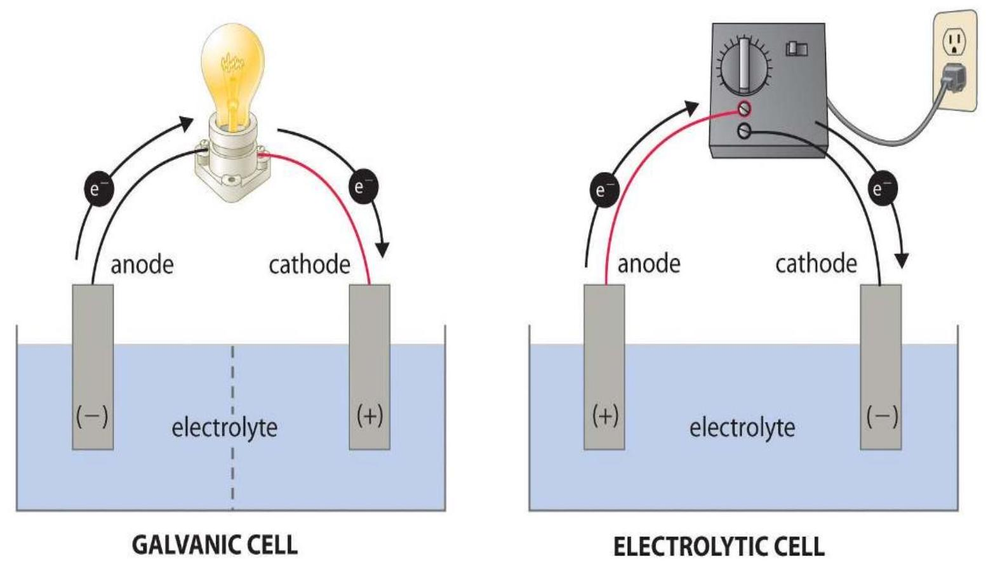

UNIT 20: ELECTROCHEMISTRY
Unit objectives
By the end of the unit, the learner should be able to:
- Differentiate between conduction and conductivity
- Discuss on the ionic equilibrium in electrochemistry
- State on the solubility of products and common ion effects
- Explain the application of electrolysis
Electrochemistry is defined as the branch of chemistry that examines the phenomena resulting from combined chemical and electrical effects. In other words, it is the study of production of electricity from energy released during spontaneous chemical reactions and the use of electrical energy to bring about non-spontaneous chemical transformations.
Many metals e.g. sodium hydroxide, chlorine, fluorine and many other chemicals are produced by electrochemical methods. Batteries and fuel cells convert chemical energy into electrical energy and are used on a large scale in various instruments and devices.
Reminder: A redox reaction is a reaction which involves a change in oxidation state of one or more elements. When a substance loses its electron, its oxidation state increases, thus it is oxidized. When a substance gains an electron, its oxidation state decreases thus being reduced.
20.1 TYPES OF ELECTROCHEMICAL CELLS
They typically consist of two electronic conductors (electrodes) and an ionic conductor (electrolyte).
There are two types of cells i.e. galvanic cells and electrolytic cells
1. Galvanic (voltaic) cells
These are electrochemical cells which contain a spontaneous reaction, and always have a positive voltage. They are the basis for the batteries that fuel modern society.
A voltaic cell consists of two compartments called half-cells. The half-cell where oxidation occurs is called anode. The other half-cell where reduction occurs is called cathode. The Electrons in voltaic cells flow from the negative electrode to the positive electrode, which flows from anode to cathode.
Hint: Red Cat and An Ox
Reduction Cathode and Anode Oxidation is a helpful way to remember which reaction occurs on which half-cell.
2. Electrolytic cells
In electrolytic cells, electrical energy is used to drive nonspontaneous redox reaction.
Differences between a Galvanic cell and an Electrolytic cell
| Electrochemical cell (Galvanic Cell) | Electrolytic cell |
|---|---|
| A Galvanic cell converts chemical energy into electrical energy. | An electrolytic cell converts electrical energy into chemical energy. |
| The redox reaction is spontaneous and is responsible for the production of electrical energy. | The redox reaction is not spontaneous and electrical energy has to be supplied to initiate the reaction. |
| The two half-cells are set up in different containers, being connected through the salt bridge or porous partition. | Both the electrodes are placed in a same container in the solution of molten electrolyte. |
| The anode is negative and cathode is the positive electrode. The reaction at the anode is oxidation and that at the cathode is reduction. | The anode is positive and cathode is the negative electrode. The reaction at the anode is oxidation and that at the cathode is reduction. |
| The electrons are supplied by the species getting oxidized. They move from anode to the cathode in the external circuit. | The external battery supplies the electrons. They enter through the cathode and come out through the anode. |
The two cells are as shown in the diagram below.
Electrolysis, Conduction and conductivity
Electrolysis is the process of driving a reaction in a non-spontaneous direction by using an electric current i.e. a chemical compound e.g. lead (II) bromide is decomposed using electricity.
Electrolyte is an ionic compound which conducts electric current in molten or aqueous solution, being decomposed in the process. Can be classified into non-electrolytes (organic liquids or solutions e.g. alcohols, pure water, sugar solution, molten sulphur), weak electrolytes (weak acids and alkalis e.g. ammonia solution, limewater) and strong electrolytes (strong acids, alkalis and salt solutions e.g. aqueous sulphuric acid, nitric acid, hydrochloric acid, sodium hydroxide, copper (II) sulphate solution).
NB: Molten/aqueous ionic compounds conduct electricity because ions free to move. In solid state, these ions are held in fixed position within the crystal lattice. Hence solid ionic compounds do not conduct electricity. When molten binary compound is electrolyzed, metal is formed on cathode while nonmetal is formed on anode.
Electrode is a rod or plate where electricity enters or leaves electrolyte during electrolysis. Reactions occur at electrodes.
Conductors are compounds that allow electric current to pass through them. Examples are metals, aqueous solution of acids, bases and salts etc.
Insulators are compounds that do not allow electric current to pass through them. Examples are pure water, urea, sugar etc.
Anode
- Positive electrode connected to positive terminal of direct current source.
- Oxidation occurs here.
- Anode loses negative charge as electrons flow towards the battery, leaving anode positively charged.
- This causes anion to discharge its electrons here to replace lost electrons and also, negative charge are attracted to positive charge.
Cathode
- Negative electrode connected to negative terminal of direct current source.
- Reduction occurs here.
- Cathode gains negative charge as electrons flow from the battery towards the cathode, making cathode negatively charged.
- This causes cation to be attracted and gains electrons to be an atom.
Anion
- Negative ion
- Attracted to anode (+ve electrode).
Cation
- Positive ion
- Attracted to cathode (-ve electrode).
Example
Electrolysis of molten $\mathrm{PbBr}_{2}$
To make molten lead (II) bromide, $\mathrm{PbBr}_{2}$, the solid is strongly heated until it melts. To electrolyze it, current is passed through the molten $\mathrm{PbBr}_{2}$.
What happens:
Ions present: $\mathrm{Pb}^{2+}$ and Br-
Reaction at Anode
Br- loses electrons at anode to become Br atoms. Br atoms created form bond together to make Br2 gas.
Reaction at Cathode
$\mathrm{Pb}^{2+}$ gains electrons at cathode to become Pb atoms becoming liquid lead (II).
Overall equation